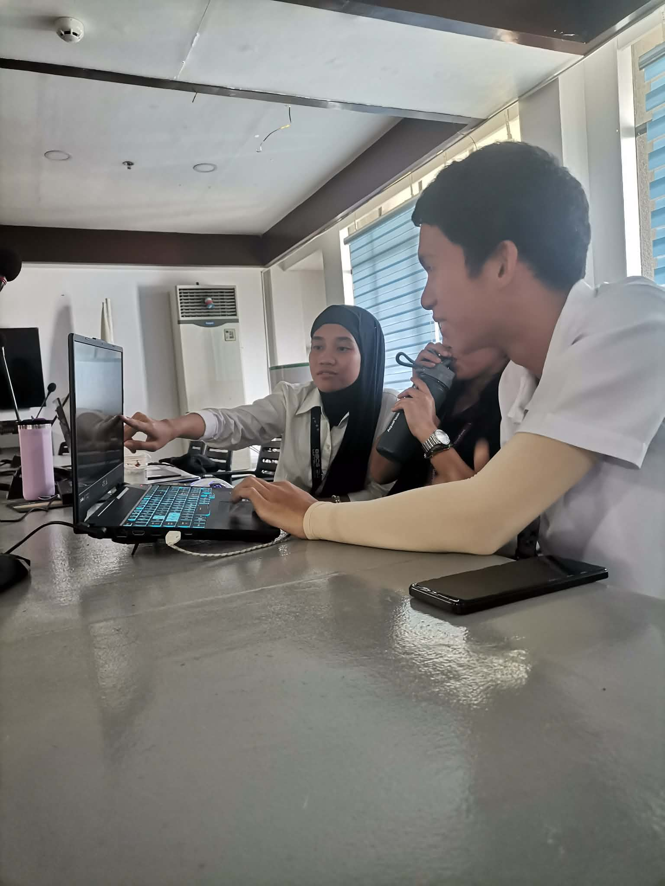

03. Internship Spotlight
Role: Web Development Intern | Agency: DTI-IX Regional Office
Project: JO/COS Management System

Week 1: Requirements Gathering & UI/UX
- Analyzed and encoded physical PDS forms into structured softcopy.
- Drafted initial database ERD and designed system UI (Dashboard, Forms, Login) via Figma.

Week 2: Backend Architecture & Security
- Established PHP/MySQL server environment and developed secure user authentication.
- Implemented a Global Sanitization Hook to dynamically filter inputs and prevent XSS vulnerabilities.

Week 3: CRUD Engine & SQL Transactions
- Completed core CRUD engine utilizing secure "Soft Delete" SQL transactions.
- Upgraded UI architecture with overlay scrollbars and advanced form data validation logic.

Week 4: Dashboard Analytics & Form UX
- Authored complex SQL
CASEqueries to feed accurate demographic KPIs to the admin dashboard. - Built a robust CSV Export script utilizing PHP output buffers.
Week 5: Research & Development (R&D)
- Conducted technical feasibility testing for Automated PDF Generation.
- Created Proof of Concept (PoC) prototypes evaluating FPDI vs Dompdf libraries.

Week 6: Automated PDS Generation
- Engineered a custom "Developer Grid Overlay" to debug coordinate mapping.
- Precisely mapped database variables onto the official CS Form 212 layout using FPDI/FPDF.

Week 7: Generative Printables & OOP
- Developed an automated module to produce official Employment Certifications.
- Extended the base FPDF class to automate headers, footers, and text justification.

Week 8: Database Refactoring & UAT
- Transitioned to live data entry, uncovering User Acceptance Testing (UAT) edge cases.
- Dynamically refactored the SQL schema and JS frontend to handle flexible employment records.

Week 9: Quality Assurance & Testing
- Executed manual end-to-end testing across all modules to verify edge cases.
- Finalized JS logic for multi-step forms prior to the bulk data entry phase.